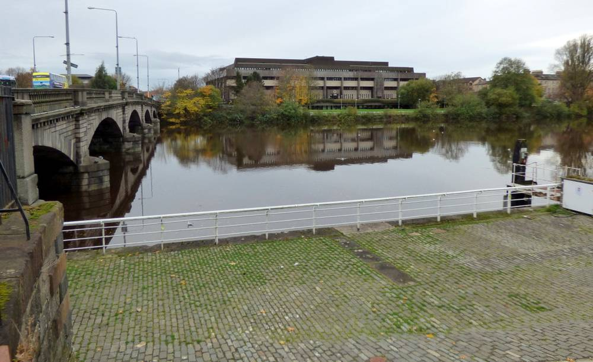

스코틀랜드 공공부지 21곳, 주민 재생에너지에 연다

병원·법원 주차장·산업단지 땅이 후보에 올랐다. 이튿날 정부는 교회·섬마을 등 주민 사업 25곳에 99만1,492파운드를 준다고 발표했다.
영국 스코틀랜드 정부가 병원과 법원, 산업단지 같은 공공 땅과 건물 21곳을 주민 재생에너지 사업 후보지로 내놓았다. 정부는 11월 18일 이 목록을 공개했고, 이튿날에는 주민 사업 25곳에 99만1,492파운드를 지원한다고 발표했다.
후보지는 정부의 첫 100일 과제로 공공기관과 지방정부가 직접 찾아낸 땅과 건물, 지붕이다. 21곳 가운데 13곳이 하일랜드·아일랜드 개발공사 땅이고, 법원 3곳과 지방의회 땅 3곳도 들어갔다. 쓰임새는 태양광 11곳, 배터리 저장장치 1곳이며 8곳은 아직 정하지 않았고, 태양광 자리에는 글래스고 법원 등 주차장 4곳이 들어 있다. 목록을 공개한 로컬 에너지 스코틀랜드는 적합성을 평가하지 않은 목록이라 주민 단체가 직접 타당성 조사를 해야 한다고 안내했다. 정부는 「2015년 지역사회 역량강화법」 지침도 고쳐 공공기관이 주민 사업을 돕는 방법을 담았다(이 법은 주민 단체가 공공 땅·건물 이전을 요청할 권리를 준다).
19일 지원 대상은 교회와 운동 시설, 자선단체, 공공건물의 태양광과 섬마을 풍력 사업이다. 가장 큰 금액은 애버딘 킹스 교회 지붕 태양광에 간 16만7,735파운드다. 바라·바터세이섬에서는 주민 소유 풍력 전기를 주민이 더 직접 쓰는 '에너지 로컬 클럽'이 만들어진다. 이번까지 올해 이 기금이 도운 주민 에너지 사업은 66곳, 약 400만 파운드다.
정부의 주민·재생에너지 지원 제도(CARES)는 지금까지 8,300만 파운드 넘게 지원해 1,200여 사업, 75MW 설비를 도왔다. 정부는 사우스에어셔 월리스타운 학교 3곳의 지붕 태양광이 25년 동안 약 100만 파운드를 주민 투자 재원으로 남길 것으로 내다봤다. 영국 정부 공기업 그레이트 브리티시 에너지가 돈을 대는 '공동체 에너지 성장기금'의 새 설비 지원 신청은 19일부터 받고 있다.
시민에너지 관점
스코틀랜드는 공공기관이 내놓은 땅 21곳을 한 장의 목록으로 묶어 주민 단체가 골라 볼 수 있게 했다. 학교 지붕 3곳 태양광이 25년 동안 약 100만 파운드를 마을에 남긴다는 정부 추정은 공공 지붕이 주민 소득의 바탕이 될 수 있음을 보여 준다. 적합성을 따지지 않은 목록이라는 점에서, 타당성 조사를 돕는 지원이 함께 가야 목록이 실제 발전소로 이어진다. 우리 지자체도 공영주차장과 청사 지붕, 유휴 공유지를 찾아 주민 협동조합에 먼저 알리는 목록부터 만들자.
출처: 스코틀랜드 정부 2026-11-18 보도자료 「New community energy project opportunities」 원문 보기
출처: 스코틀랜드 정부 2026-11-19 보도자료 「Powering Scotland's communities」(지원 대상 25곳 표) 원문 보기
출처: Local Energy Scotland 2026-11-18 「Community energy opportunities on public land and buildings」 후보지 21곳 목록 원문 보기